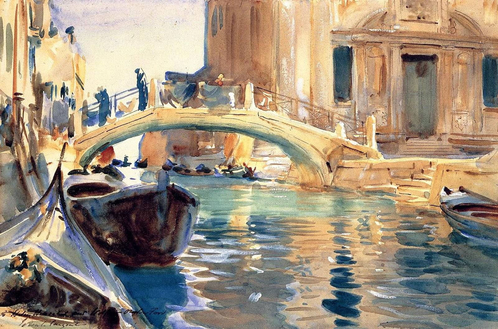

Krajobrazy Rilkego
Wenecja
Owe miesiące spędzone w Wenecji to, jak mniemam, jeden z najspokojniejszych okresów w życiu poety.
Mezzanino wielce mu się spodobało, dzielna Gigietta otoczyła go troskliwą pieczą (jej mąż, nazwiskiem Dante, służył u D’Annunzia jako kamerdyner). Towarzyszyło mu jednak uczucie, iż owładnęła nim wenecka gnuśność; uskarżał się po cichu na nieprzemożoną senność i ustawiczne znużenie. I tak żył beztrosko z dnia na dzień, niczym „pośród zwierciadlanych odbić”, stronił od obcych, którzy go zanudzali, choć czasem z chęcią składał wizyty damom weneckiej elity towarzyskiej w ich wspaniałych, starych pałacach.
— Marie von Thurn und Taxis na kartach swego Wspomnienia o Rainerze Marii Rilkem
John Singer Sargent „Ponte San Giuseppe di Castello, Venice”, 1903
I stałem tak między nimi, i rad byłem, że nie wyjeżdżam.
Wkrótce zimno będzie. Miękka ta, opiatyczna Wenecja ich przesądów i potrzeb znika razem z tymi sennymi cudzoziemcami — i pewnego ranka zjawia się ta inna, rzeczywista, czujna, nieprzystępna a krucha aż do pęknięcia, wcale nie wymarzona: ta pośrodku nicości na zatopionych lasach zachciana, wymuszona i wreszcie tak na wskroś istniejąca Wenecja.
Sugestywne państwo, sól i szkło ubóstwa wymieniające na skarby narodów. Piękna przeciwnego świata, która aż do swoich drobiazgów zdobniczych, pełna stoi uczajonych energii, co się rozgałęziały w coraz delikatniejszych nerwach — ta Wenecja.
— Rilke na kartach Maltego, przeł. W. Hulewicz

Pierre-Auguste Renoir „Wenecja. Pałac Dożów”, 1881
Tak, Wenecja. Było to pierwsze moje nawiązanie do przeszłości. Przebywałem tam pięć tygodni, mieszkałem, jak przed laty, na pięknym mezzanino… Moje życzenie, aby wszystko odnaleźć tutaj jak dawniej, w najmniejszym nawet stopniu nie zmienione, spełniło się tak dosłownie, że wciąż stałem niby na granicy tych minionych, niewypowiedzianie pięknych lat, jakby chcąc zwyczajnie powtórzyć, raz jeszcze przeżyć to wszystko…
— Rilke w liście do Lou Andreas-Salomé, 31 XII 1920, przeł. W. Markowska

Édouard Manet „The Grand Canal”, 1875
To wnętrze, które jakby wydrążone
sklepia się wyżej w glazurach pozłotnych,
zaokrąglone, gładkie i kosztowne,
stało się miastu przybytkiem ciemności…
— Rilke w wierszu San Marco z tomu Nowych wierszy część wtóra, przeł. A. Lam

Edouard Manet „Wenecja, Canal Grande”, 1875
Nie jestem pewien, czy las, którym wędrujemy, nie jest jedynie moim nastrojem, ciemnym, cienistym. Któż wie, może nawet Wenecja jest tylko odczuciem?
— Rilke na kartach Dziennika schmargendorfskiego, przeł. W. Markowska